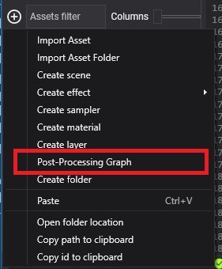
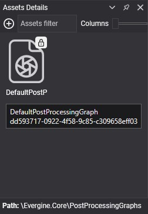
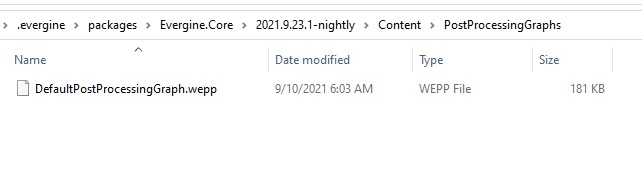

Create a Post-Processing Graph

A post-processing graph is an asset: a set of connected nodes, each a compute effect, that turns the rendered image into the final one. Create your own when the default graph does not have the effect you need, or to keep only the effects you use.
Create a post-processing graph asset in Evergine Studio
Click the  button in the Assets Details panel and choose Post-Processing Graph.
button in the Assets Details panel and choose Post-Processing Graph.

Post-processing graphs in Assets Details
Post-processing graph assets appear in the Assets Details panel when you select their folder in the Project Explorer. Double-click one to open the Post-Processing Graph Editor.

Post-processing graph files in the Content folder
A post-processing graph is stored in a file with the .wepp extension.
